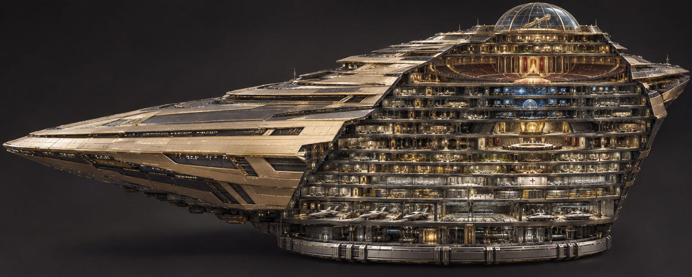
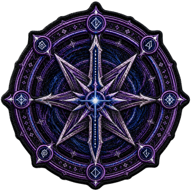
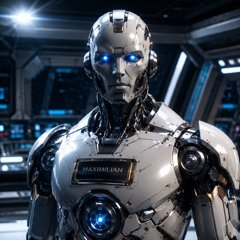

LUXURIA INVICTA BLUEPRINTS
Eleven drawing sheets for the 34 km battlecruiser. Pick a sheet, then select parts of the drawing or use the buttons to see the details.
SHEET 1 · SIDE CUTAWAY
SHEET 2 · TOP PLAN
Exterior
Hull dimensions
- Length
- 34.0 km
- Beam
- 12.4 km
- Hull height
- 4.1 km
- Height with Crown and fins
- about 5.5 km
- Interior volume
- about 950 km³ (about 1,100 km³ with armor)
- Mass
- about 530 billion tonnes
- Frames
- F0 at the prow to F68 at the stern, 500 m apart
- Spine Atrium
- Frame 52, 26 km from the prow
SHEET 3 · CROSS-SECTION AT FRAME 52
Structure
Deck stack, keel to top
SHEET 4 · DECK PLAN
SHEET 5 · CROWN BRIDGE LEVELS

Canon cutaway render of the Crown Bridge. The drawing above is the engineering level diagram.

Command ship
Crown Bridge
Lead NPC
Avalon

Supreme Commander
Maximilian
- Staff
- about 3,500
- Escape capacity
- 3,500 for 90 days, or 12,000 for 10 days
- Separation
- 40 seconds
- Propulsion
- 4 fusion torches, short-range Drift Engine
- Throne Deck
- 120 m amphitheater, about 200 stations
- Link to the ship
- Level 2 gangways, then the Crown Causeway maglev
SHEET 6 · POWER GRID
Electrical
Power budget
| Load | Power | Notes |
|---|---|---|
| Sky ceilings and the Lumen | 25 GW | Daylight for the cities with a sky |
| Verdance grow lights | 15 GW | Farms and forest on Deck 3 |
| Hangar operations | 7 GW | Launch shafts, docks and flight control on Deck 5 |
| Gravity plates | 40 GW | 1 g on every deck |
| Homes, hotels and services | 18 GW | About 10 kW per person |
| Ferrum | 30 GW | Foundries, shipyard, fabrication |
| Air, water and cooling | 10 GW | Life support plant on every deck |
| Computing and sensors | 5 GW | The Lantern, deck cores, scanners |
| Peacetime total | 150 GW | Carried by the Void Reactor |
| Battle total | about 9.7 TW | Lance 6 TW, Aegis 3 TW, guns 0.5 TW, ship 0.15 TW. Four fusion cores give 10 TW. |